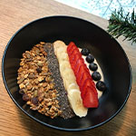

CV Card

Ahmad Ahmedov
Шеф повар, Технолог, Разработчик
Профиль
- Имя: Ахмад
- День рождения: Июнь 13, 1979
- Место рождения: г.Самарканд
О себе: Шеф-повар технолог с огромным опытом работы в гостинично ресторанном бизнесе. Принимал активное участие в start up многих проектов москвы. Имею системный подход к своей работе.
Опыт
-
2007
Film: Black Hawk Down
TV Show: Band of Brothers -
2008
Film: Star Trek:Nemesis -
2009
Film: Layer Cake
Stage Credit: Festen -
2010
Film: Minotaur, Marie Antoinette, Scenes of a sexual nature
TV Show: A for andromeda, Sweeney Todd -
2012
Film: Rocknrolla, Bronson
TV Show: Wuthering Heights -
2009
Film: Perfect, Thick as thieves
TV Show: The Take -
2010
Film: Inception
Stage Credit: The long red road -
2013
Film: Tinker Tailor Soldier Spy, Warrior -
2012
Film: The Dark Knight Rises, Lawless -
2016
Film: Locke 2018
Film: The Drop
TV Show: Peaky Blinders-
2020
Film: Child 44, London Road, Mad Max: Fury Road, The Revenant, Legend -
2022
Film: Dunkirk
TV Show: Taboo
For a complete list of Tom Hardy's filmography visit www.IMDB.com
Trivia
- He loves dogs.
- He was awarded the 2003 London Evening Standard Theatre Award for Outstanding Newcomer for his performances in both In Arabia We'd All be Kings and for his role as Luca in Blood.
- He made his debut in the war film Black Hawk Down.
- Hardy has also performed on British and American stages.
- For the film Bronson he put on three stone (19 kg/42 pounds).
- He once said ‘I love to do things I haven't done before’. This mentality is probably why his career has been so interesting for us to watch as audiences.
- Hardy named his childhood dog Max because he was a fan of the film Mad Max. For the two people who don't know, he later went on to play Mad Max in the film Mad Max: Fury Road.
- He studied at Tower House School and Reed's School, then at Richmond Drama School, and subsequently at the Drama Centre London.
- His acting idol is Gary Oldman, somebody he's now worked with four times, in The Dark Knight Rises, Child 44, Lawless and Tinker Tailor Soldier Spy.
- Hardy joined Drama Centre London in September 1998, and was taken out early after winning the part of US Army Private John Janovec in the award-winning HBO-BBC miniseries Band of Brothers.
For more trivia about Tom Hardy visit www.IMDB.com
Услуги
-
Academy Award
2016: Best Performance by an Actor in a supporting role for The Revenant(Nominated)
Портфолио
Хочу вас познакомить с моим творчеством
-

Йогут боул с ягодами и гранолой
(Можно подавать к завтраку) -
Max Rockatansky
(Mad Max:Fury Road, 2015) -
Ivan Locke
(Locke, 2014) -
Alfie Solomons
(Peaky Blinders, 2013-present) -
James Delaney
(Taboo, 2017) -
Charles Bronson
(Bronson, 2009) -
Reggie & Ronnie Kray
(Legend, 2015) -
Bane
(The dark knight rises, 2012)